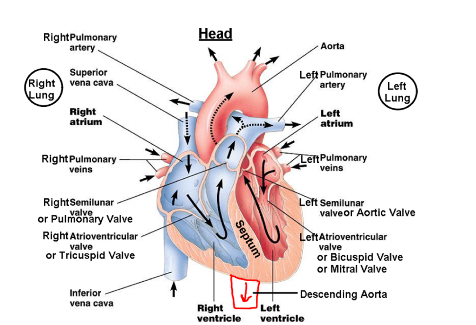

biology final review
Chapter 15
Selective Breeding – Allowing only those animals with desired characteristics to produce the next generation.
Hybridization – Crossing dissimilar individuals to bring together the best of both organisms
Inbreeding – The continued breeding of individuals with similar characteristics
Chapter 16
Evolution – Process by which modern organisms have descended from ancient organisms
Fossil – Preserved remains of ancient organisms
Artificial Selection – Selection by humans for breeding of useful traits from the natural variation among species.
Fitness – Ability of an individual to survive and reproduce
Adaptation – A change or the process of change by which an organism or species becomes better suited to its environment.
Biogeography – The branch of biology that deals with the geographical distribution of plants and animals.
Homologous Structures – Similar structure but different function – developed from same embryonic tissue
Analogous Structures – Same Function different structures
Vestigial Structures – organ that serves no useful function
Chapter 17
Gene Pool – The combined genetic information of all the members of a particular population.
Allele Frequency – The number of times an allele occurs in a gene pool compared with the number of times other alleles occur.
Single-Gene Trait ¬– Trait controlled by a single gene.
Polygenic Trait – Trait controlled by 2 or more genes.
Directional Selection – One end has higher fitness
Stabilizing Selection – The middle has highest fitness
Disruptive Selection – The middle has now fitness, the ends have highest fitness.
Genetic Drift – Change in a gene pool of a small population due to chance.
Bottleneck Effect – An event that shrinks a population to a smaller
size. Only the traits of the individuals that survived will be passed
on to next generations.
Founder Effect – A small group moving to a new area.
Genetic Equilibrium – no evolution
Hardy-Weinberg Principle - Evolution will not occur when the following conditions are met:
1. Natural Selection does not occur
2. The population is very large
3. The population is isolated
4. There are no mutations
5. Mating is random
Sexual Selection – The natural selection arising through preference by
one sex for certain characteristics in individuals of the other sex.
Species – A group of organisms that breed with one another and produce fertile offspring.
Speciation – formation of new species
Reproductive Isolation – separation of species or populations so that they cannot interbreed and produce fertile offspring
Behavioral Isolation – occurs when 2 populations are capable of
interbreeding by have differences in courtship rituals or other type of
behavior.
Geographical Isolation – 2 populations are separated by geographic barriers
Temporal Isolation – 2 or more species reproduce at different times
Molecular Clock – using amino acids to detect similarities in organisms.
Chapter 18
Binomial Nomenclature – Classification system in which each species is assigned a two-part scientific name
Genus – Group of closely related species; the first part of the scientific name in binomial nomenclature
Systematics – the study of the diversity of life and the evolutionary relationships between organisms
Taxon – group or level of organization into which organisms are classified
Phylogeny – Study of evolutionary relationships among organisms
Clade – evolutionary branch of a cladogram that includes a single ancestor and all its decedents
Monophyletic Group – group the consists of a single ancestral species
and all of its descendants and excludes any organisms that are not
descended from that common ancestor
Cladogram – diagram depicting patterns of shared characteristics among species
Domain – A larger, more inclusive taxonomic category than a kingdom
Bacteria – domain of unicellular prokaryotes that have cell walls and contain peptidoglycan
Archaea – domain consisting of unicellular prokaryotes that have cell walls and don’t contain peptidoglycan
Chapter 19
Gradualism – The evolution of species by gradual accumulation of small genetic changes over a long period of time
Punctuated Equilibrium – A pattern of evolution in which long stable
periods are interrupted by brief periods of more rapid change
Adaptive Radiation – Process by which a single species or small group
of species evolves into several different forms that live in different
ways
Convergent Evolution – Process by which unrelated organisms
independently evolve similarities when adapting to similar environments
Coevolution – Process by which two species evolve in a response to changes in each other over time
Endosymbiotic Theory – Theory that proposes that eukaryotic cells formed from a symbiotic relationship between prokaryotic cells
Chapter 20
Virus – A particle made of proteins, nucleic acids, and sometimes lipids that can replicate but only by infecting living cells
Capsid – Protein coast surrounding a virus
Bacteriophage – Virus that infects bacteria
Lytic Infection – Type of infection in which a virus enters a cell, makes copies of itself, and causes the cell to burst
Lysogenic Infection – Type of infection in which a virus embeds its DNA
into the DNA of the host cell and is replicated along with the host cell
Prophage – Bacteriophage DNA that is embedded in the bacterial host’s DNA
Retrovirus – RNA virus that contains RNA as the genetic information
Prion – Protein particles that cause disease
Chapter 21
Pseudopod - A temporary, foot-like extension of a cell, used for locomotion or getting food
Cilium - a hairlike projection from the surface of a cell
Flagellum - a long, whiplike structure that helps a cell to move
Spore - in prokaryotes, protists, and fungi, any variety of
thick-walled life cycle stages capable of surviving unfavorable
conditions
Conjugation - process in which paramecia and some prokaryotes exchange genetic information
Alternation of generations - process in which many algae switch back
and forth between haploid and diploid stages of their life cycles
Sporangium - spore capsule in which haploid spores are produced by meiosis
Algal bloom - increase in the amount of algae and other producers that results from a large input of a limiting
Food vacuole - small cavity in the cytoplasm of protists that temporarily stores food
Gullet - indentation in one side of a ciliate that allows food to enter the cell
Plasmodium - parasitic protozoan of the genus Plasmodium that causes malaria in humans
Chitin - complex carbohydrate that makes up the cell walls of fungi; also found in the external skeletons of insects
Hypha - any of the threadlike filaments forming the mycelium of a fungus
Fruiting Body - slender reproductive structure that produces spores and
is found in some fungus like protists; reproductive structure of fungus
that develops from a mycelium
Mycelium - densely branched network of the hyphae of a fungus
Lichen - symbiotic association between a fungus and a photosynthetic organism
Mycorrhizae - symbiotic relationships between fungal hyphae and plant roots.
Digestive System
Excretory System
Nervous System
Heart (Circulatory System)

Respiratory System
Lymphatic System
Benjamin Boczulak - 2016
TOP
HOME